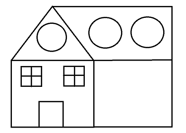

 Esta es una bella morada diseñada con las herramientas de paint, podemos ver un simple estilo americano que mantiene un amplio diseño y se adapta a las necesidades de espacio-vista de una familia promedio de norteaméricaEsta es una bella morada diseñada con las herramientas de paint, podemos ver un simple estilo americano que mantiene un amplio diseño y se adapta a las necesidades de espacio-vista de una familia promedio de norteaméricaEsta es una bella morada diseñada con las herramientas de paint, podemos ver un simple estilo americano que mantiene un amplio diseño y se adapta a las necesidades de espacio-vista de una familia promedio de norteaméricaEsta es una bella morada diseñada con las herramientas de paint, podemos ver un simple estilo americano que mantiene un amplio diseño y se adapta a las necesidades de espacio-vista de una familia promedio de norteaméricaEsta es una bella morada diseñada con las herramientas de paint, podemos ver un simple estilo americano que mantiene un amplio diseño y se adapta a las necesidades de espacio-vista de una familia promedio de norteaméricaEsta es una bella morada diseñada con las herramientas de paint, podemos ver un simple estilo americano que mantiene un amplio diseño y se adapta a las necesidades de espacio-vista de una familia promedio de norteaméricaEsta es una bella morada diseñada con las herramientas de paint, podemos ver un simple estilo americano que mantiene un amplio diseño y se adapta a las necesidades de espacio-vista de una familia promedio de norteaméricaEsta es una bella morada diseñada con las herramientas de paint, podemos ver un simple estilo americano que mantiene un amplio diseño y se adapta a las necesidades de espacio-vista de una familia promedio de norteaméricaEsta es una bella morada diseñada con las herramientas de paint, podemos ver un simple estilo americano que mantiene un amplio diseño y se adapta a las necesidades de espacio-vista de una familia promedio de norteaméricaEsta es una bella morada diseñada con las herramientas de paint, podemos ver un simple estilo americano que mantiene un amplio diseño y se adapta a las necesidades de espacio-vista de una familia promedio de norteaméricaEsta es una bella morada diseñada con las herramientas de paint, podemos ver un simple estilo americano que mantiene un amplio diseño y se adapta a las necesidades de espacio-vista de una familia promedio de norteaméricaEsta es una bella morada diseñada con las herramientas de paint, podemos ver un simple estilo americano que mantiene un amplio diseño y se adapta a las necesidades de espacio-vista de una familia promedio de norteaméricaEsta es una bella morada diseñada con las herramientas de paint, podemos ver un simple estilo americano que mantiene un amplio diseño y se adapta a las necesidades de espacio-vista de una familia promedio de norteaméricaEsta es una bella morada diseñada con las herramientas de paint, podemos ver un simple estilo americano que mantiene un amplio diseño y se adapta a las necesidades de espacio-vista de una familia promedio de norteaméricaEsta es una bella morada diseñada con las herramientas de paint, podemos ver un simple estilo americano que mantiene un amplio diseño y se adapta a las necesidades de espacio-vista de una familia promedio de norteaméricaEsta es una bella morada diseñada con las herramientas de paint, podemos ver un simple estilo americano que mantiene un amplio diseño y se adapta a las necesidades de espacio-vista de una familia promedio de norteaméricaEsta es una bella morada diseñada con las herramientas de paint, podemos ver un simple estilo americano que mantiene un amplio diseño y se adapta a las necesidades de espacio-vista de una familia promedio de norteaméricaEsta es una bella morada diseñada con las herramientas de paint, podemos ver un simple estilo americano que mantiene un amplio diseño y se adapta a las necesidades de espacio-vista de una familia promedio de norteamérica